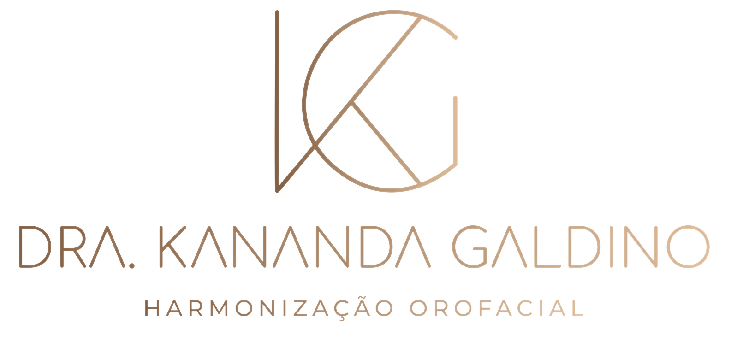
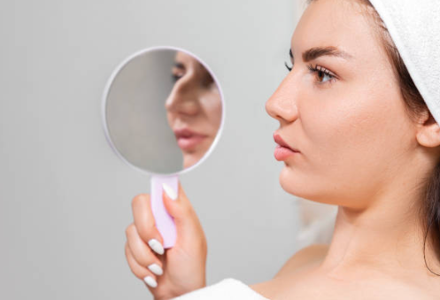
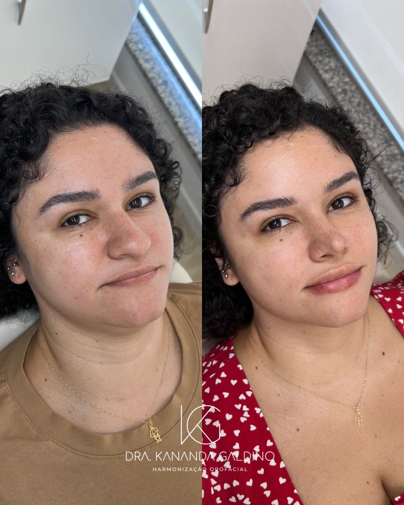
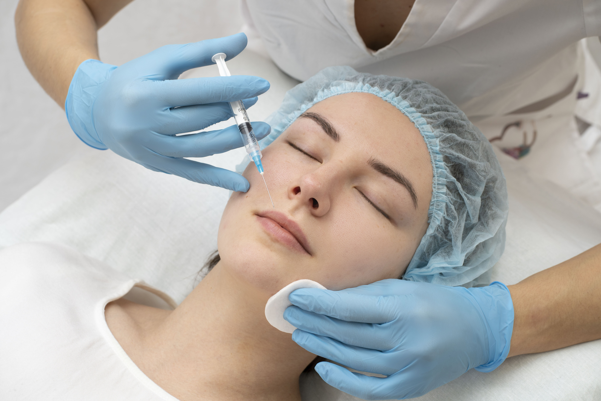
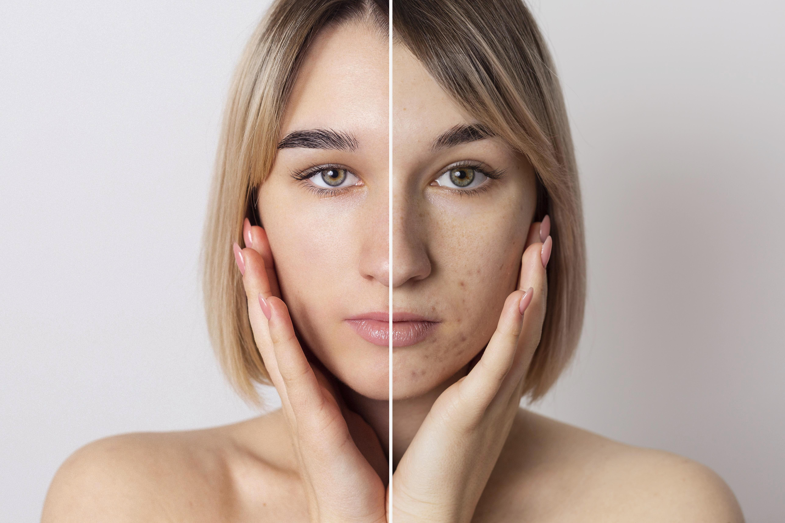
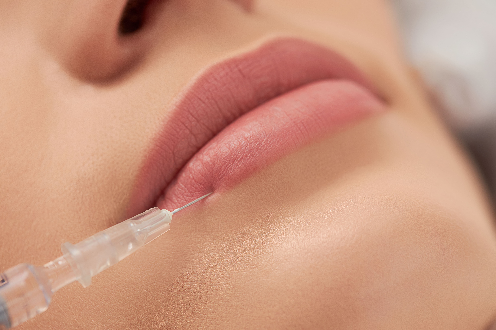
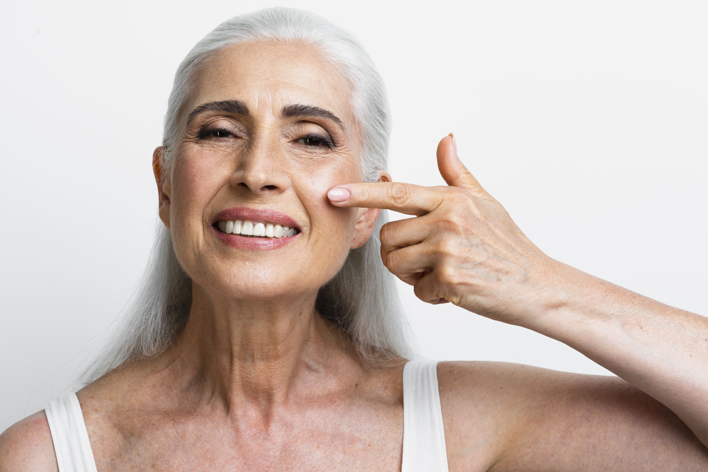
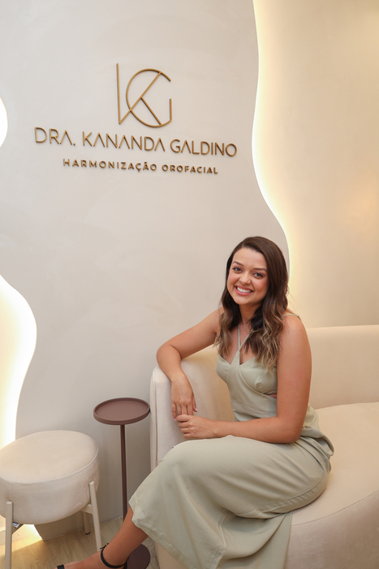

A Dra. Kananda Galdino é especialista em realçar a harmonia facial através da Rinomodelação Estruturada, proporcionando resultados naturais e duradouros. Com técnicas modernas e seguras, ela transforma a estética nasal, corrigindo imperfeições e valorizando a beleza única de cada paciente.

A Rinomodelação Estruturada é um procedimento minimamente invasivo que oferece resultados impressionantes e, ao mesmo tempo, naturais — preservando sua identidade e realçando sua beleza. Realizada pela Dra. Kananda Galdino, especialista no assunto, essa técnica moderna e segura visa realçar a simetria do nariz em relação ao rosto, corrigindo imperfeições como a giba, afinamento e definição da ponta nasal. O procedimento proporciona um contorno homogêneo e elegante, conferindo um formato sutil ao nariz e valorizando a beleza única de cada paciente.

No consultório da Dra. Kananda, a Rinomodelação Estruturada é um procedimento seguro, minimamente invasivo e realizado com total conforto. Com o uso de anestesia local, a técnica é aplicada de forma precisa por meio de fios cirúrgicos, que estruturam o nariz e promovem um contorno mais harmônico, natural e equilibrado.
Antes da realização, você passa por uma consulta personalizada, onde alinhamos expectativas, avaliamos o seu perfil facial e esclarecemos todas as dúvidas. Esse cuidado garante um planejamento individualizado e resultados que valorizam sua beleza de forma única.
Nosso objetivo é proporcionar uma experiência tranquila, segura e com alto nível de satisfação, respeitando sempre as características e desejos de cada paciente.
A Rinomodelação Estruturada pode ser uma opção para quem tem um desconforto físico ou emocional relacionado à aparência do nariz. A decisão pela realização da cirurgia é pessoal e fundamentada em suas próprias vontades e necessidades. Uma consulta com a Dra. Kananda, profissional especializada, pode oferecer um panorama claro sobre o procedimento, benefícios e riscos, ajudando a determinar se a Rinomodelação Estruturada é a opção certa para você, considerando sempre seus objetivos e saúde global.
Você passa pela consulta com a Dra. Kananda, tira dúvidas, alinha as expectativas e recebe uma análise individual do seu seu caso.
Definimos a melhor estratégia para seu objetivo, atendendo as suas expectativas e necessidades dentro da técnica da Rinomodelação Estruturada.
O procedimento é realizado com todo a eficiência e expertise da Dra. Kananda e você recebe orientações completas para o pós operatório e acompanhamento do resultado.
Um resultado natural, sem alterações drásticas, mas com uma aparência mais harmoniosa e equilibrada, mantendo sua identidade e realçando sua beleza.
Resultado imediato, em apenas 1 hora voce sai do consultório com o nariz reformulado
Recupere sua confiança e bem-estar, com um nariz que reflete sua identidade e valoriza sua beleza.
"Sempre odiei meu nariz precisava resolver isso de uma vez por todas. Conheci a Dra. Kananda no instagram e depois de um tempo tomei coragem de marcar a consulta. O procedimento foi super rápido e não doeu nada! O resultado ficou incrível eu recomendo bastante."
"Fiz minha rino em 2023 e recomendo muito, a dra Kananda. A consulta foi super esclarecedora e o procedimento foi mais tranquilo do que eu imaginava. Não doeu nada e o resultado ficou muito natural!"
"Eu sempre um tive nariz muito feio e encurvado, vi alguns resultados da Dra. Kananda no instagram e fiquei super interessado. Tinha medo de ficar estranho por eu ser homem, mas o resultado foi irado! Todo mundo elogia!"
"Fiz uma rinoplastia a 10 anos e nunca gostei do resultado, vi alguns resultados da Dra. Kananda no instagram e vi que ela atendia pacientes vindo da rinoplastia e resolvi marcar a consulta. O procedimento foi incrível, não doeu nada e o resultado foi muito natural! Recomendo bastante! Uma pena eu ter demorado tanto tempo pra fazer isso."
Confira alguns resultados de pacientes atendidos pela Dra. Kananda, sempre com foco em naturalidade, harmonia facial e segurança.

Tratamento que utiliza o neuromodulador capaz de reduzir rugas e linhas de expressão, proporcionando uma aparência mais jovem e suave.

Procedimento estético no qual é utilizado preenchedor a base de ácido hialurônico de diferentes reticulações para restaurar volume facial, suavizar rugas e melhorar contornos faciais.

Técnica que utiliza preenchedores para aumentar o volume e a definição dos lábios, proporcionando lábios mais volumosos e sensuais.

Abordagem abrangente para cuidar da saúde e aparência da pele, com foco em tratamentos personalizados para hidratação, rejuvenescimento e melhoria da textura da pele.
Tratamento que utiliza substâncias especiais para estimular a produção de colágeno na pele, promovendo a firmeza, elasticidade e redução de rugas.

A Dra. Kananda Galdino é uma profissional altamente qualificada e dedicada à excelência em procedimentos estéticos faciais. Com vasta experiência em Rinomodelação Estruturada, ela se destaca por sua abordagem personalizada e resultados naturais.
Sua formação inclui especialização em procedimentos estéticos faciais, com foco em técnicas modernas e seguras de harmonização facial. A Dra. Kananda é reconhecida por sua habilidade em transformar a estética nasal, proporcionando resultados que valorizam a beleza única de cada paciente.
Em seu consultório, a Dra. Kananda oferece um ambiente acolhedor e profissional, onde cada paciente recebe atenção personalizada. Sua dedicação à excelência e compromisso com resultados naturais fazem dela uma referência em procedimentos estéticos faciais.